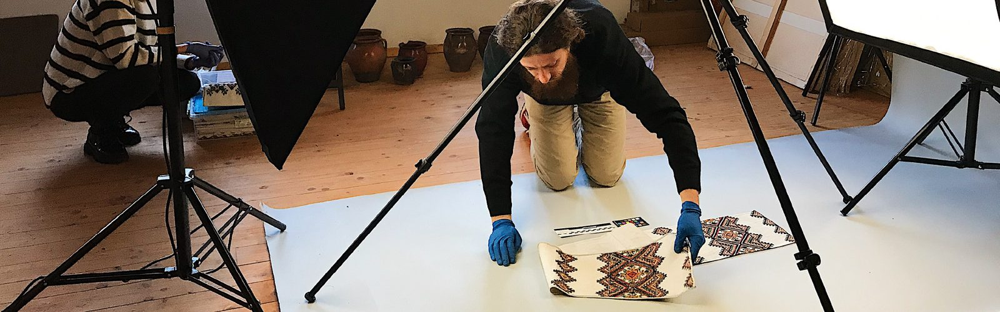
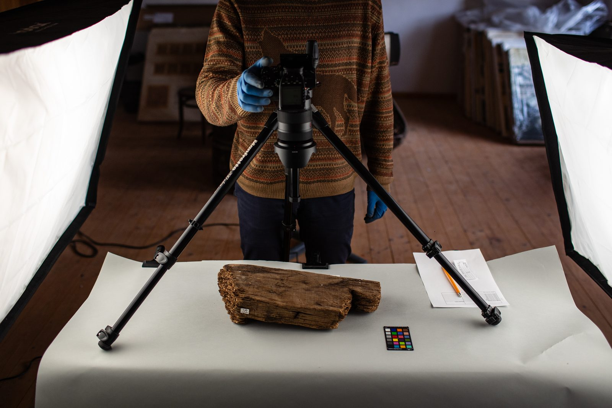
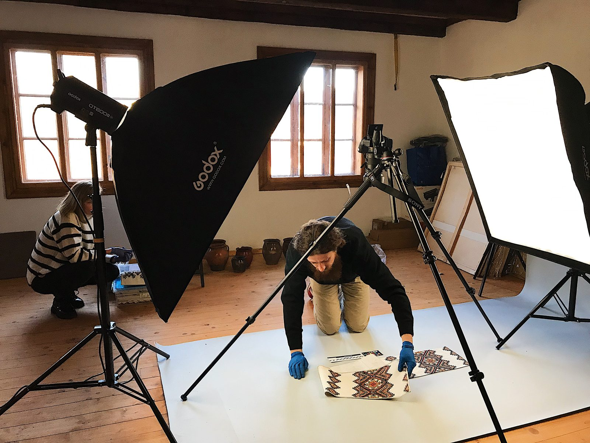
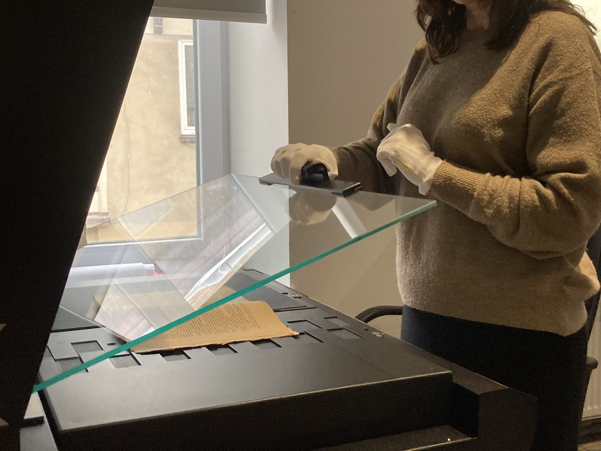

What is Museum Digitalization and Why is it Necessary? — The Experience of Ukrainian Heritage Monitoring Lab
15.08.24
With the start of the full-scale invasion and in response to the urgent need to preserve cultural heritage, including documenting its destruction, the initiative HeMo: Ukrainian Heritage Monitoring Lab1 was created. Its founder, Vasyl Rozhko — a museum expert, heritage conservator, and head of the NGO "Tustan" — united concerned professionals and institutions working in the cultural sphere for this purpose.
The HeMo team goes on expeditions to document monuments damaged by the Russians and also maintains a database with information about the surveyed objects. Since September 2022, HeMo has added museum digitalization to its areas of work, launching the Museum Digitalization Center in Lviv2. It was created as part of the project "Crisis Inventory and Leap to Digitalization of Museum Records," funded by the European Union.
How are exhibits digitized, what opportunities do museums gain by having digital copies of their collections, and how can this help us in the war with Russia? Kunsh spoke with Natalia Dziubenko, the coordinator of digitalization and collaboration with museums at HeMo and the head of the Applied Museology Department at the State Natural History Museum of the NAS of Ukraine.
The Project Idea
Museum digitalization is not just about digitizing exhibits but also about cataloging them and the ability to manage them in the digital space. First and foremost, it's about creating a "digital twin" of a museum object, explains Natalia Dziubenko. Such a copy is not just an image. The photo of the object must be accompanied by metadata. This is the "passport of the object," the minimum necessary information about the exhibit that helps identify it (for example, the inventory number and the name of the object). "If you only have a photo without associated metadata, it's just digital junk," she emphasizes.
In Ukraine, there are many grassroots initiatives where museums try to digitize collections on their own, says the expert. Therefore, the main idea of the Museum Digitalization Center project is to ease this process for colleagues and raise the quality of digitalization. For this purpose, in addition to directly digitizing collections, the team consults museum workers on the technical nuances of the process: from how to use the equipment during digitization to post-processing images. They also provide tools to help store and manage digitized data, such as cloud storage and the "Curator's Office" program for linking images to metadata. Additionally, they are developing a program for cataloging and managing collections.
Five institutions participated in the pilot project of the Museum Digitalization Center: the State Natural History Museum of the National Academy of Sciences of Ukraine, the State Historical and Cultural Reserve "Tustan," the Kharkiv Literary Museum, the Odesa National Art Museum, and the Bohdan and Varvara Khanenko National Museum of Arts. The museums were selected based on the types of collections — the Center's team wanted to try digitizing different exhibits. They also assessed the institutions' capacity to participate in the project, as digitalization specialists work side by side with museum staff.
For the safety of exhibits and to simplify all processes, the Museum Digitalization Center is mobile. The project team travels directly to museums to digitize their collections.
Stages of Digitalization
The first stage is planning the process and preparing for digitization. The Center's team and the museum determine the goals of the digitization, discuss how they will work, and track the results.
The next stage is for museums to prioritize the items and form a digitization strategy since there are usually many exhibits, and the digitalization process can take years, says Natalia Dziubenko. The museum decides where to start. It could be the most valuable exhibits or collections or items that will be evacuated. Sometimes the necessity drives museums to digitize: a collection is going to be exhibited abroad, or they are organizing an exhibition and need digital copies for the catalog. "Kharkiv [Kharkiv Literary Museum], for example, is digitizing items that researchers currently do not have access to. This is heritage associated with the 'Executed Renaissance.' Many items that researchers constantly referred to are unique. But now the exhibition has been dismantled, and the collection has been evacuated," Natalia Dziubenko gives as an example.

In addition, the museum prepares metadata for each object to be digitized. At this stage, they also plan the "conveyor" — the path of the item from the storage room to the digitization site, the work on-site, and the roles of everyone involved in the process. According to Natalia, in most museums worldwide, photographers do not touch the object, especially if the item is valuable, as the responsibility for the exhibit lies with the museum staff. For example, staff members know how to handle the object without damaging it.
The actual work with museum objects begins in the third stage. Whether it will be regular photography or 3D modeling is also decided by the museum. If it involves 3D modeling, different types are used: from photogrammetry (a technology for creating a 3D model by photographing the object from different angles and then processing and "stitching" the images in specialized software to reproduce the object) to using 3D scanners. However, creating a 3D model is very time-consuming at the post-processing stage. Moreover, such files take up a lot of space, complicating their storage. Therefore, according to Dziubenko, 2D scanning and photography are more commonly used for scientific digitization.
The number of images is also chosen by the museum, but it often depends on the object. Natalia explains: "For natural collections, we took six images of one taxidermy specimen. We rotated it from all sides. Plus, the bottom of the stand is always photographed because all the interesting information is there. Especially in historical collections — donation inscriptions, for example, the names of famous figures."
The final stage is linking the "image" to the metadata. For this purpose, the Museum Digitalization Center developed a separate program called "Curator's Office." It helps input data automatically, reducing the likelihood of errors. Digital copies are then moved to the "cloud." The pilot museums are provided with cloud storage by HeMo until they are ready to transfer the materials to their own "clouds" or other storage media.
What Happens Next
The main idea of digitalization is that the information can be managed, shared, and exchanged.
Some museums have their own platforms and provide access to their collections. For example, the State Natural History Museum has the Biodiversity Data Center of Ukraine. The Odesa National Art Museum has an electronic catalog with images from its collections. Museums working with the Digitalization Center plan to create public access to their collections, says Natalia Dziubenko. In her opinion, it would be ideal if we had a single national aggregator of collections where any items from all Ukrainian museums could be freely viewed.
The expert also adds that Ukraine does not have its own systems for electronic management and accounting of collections. With such a system, it would be possible to manage collections and track the entire history of a museum item, as it would include the inventory documentation.
Thus, within the digitalization direction, the HeMo team is developing its own management accounting system for museums — IDEX. "The idea is that this management accounting system will be compatible with any registries," explains Dziubenko.
Features of Working with Collections
For all items, especially colored ones, a color checker — a device that helps reproduce colors accurately — and a scale ruler are used. To obtain high-quality photos of large items, especially those with fine details, photo stacking is done. Individual parts are photographed and then "stitched" together in specialized programs. This applies, for example, to embroidered towels, where the most interesting part is the embroidery on opposite ends. "How do you fold it to make it look nice and aesthetic, with everything in the frame? Our photographers and museum staff, who have worked with such materials, watched a lot of videos and different catalogs. We realized that there are no rules, and we need to do it in a way that’s convenient," shares Dziubenko.

The team calculates how much time is spent working with an exhibit, depending on its size and type, considering all stages of digitization. "When we were digitizing small birds, we could do several dozen a day: 30–40. But when we moved on to large birds, such as eagles, it was 5–6," compares Natalia Dziubenko. Time calculations are necessary for museums working with digitalization: both for forming a digitization strategy and for filling out, for example, grant applications.
During the digitization of collections, the team follows international standards for digitalization at every stage. There are requirements for the image itself, metadata, and stored files. For example, the project uses an international standard for describing cultural heritage and information about it — CIDOC CRM6. This is a conceptual model that provides a common basis for museums and cultural institutions to describe heritage and exchange information about it. In addition, during the digitization of natural collections, the team consulted with experts from the Smithsonian Museum in the USA, says Natalia.
From Papers to Digitalization
Currently, Ukraine does not have a strategy for digitizing cultural heritage. There are no approved standards and rules at the legislative level that museums can follow. The international standards used in digitization work still need to be adapted to Ukrainian realities, explains Natalia. They should be translated and formatted into working guidelines for museum digitalization.
One of the main challenges in digitization is the lack of a regulated electronic inventory system for museum artifacts. Although in 2016, a regulation on maintaining records of museum items and objects of cultural value in electronic form was approved, it lost its validity in 2021. Additionally, there is no comprehensive system for registering museums of various types and statuses, or forms of ownership. As a result, it is impossible to accurately count the number of museums and the artifacts they hold.
However, some steps are being taken in this direction. For example, in 2022, the Ministry of Culture and Information Policy launched a project to create a digital registry of Ukraine's museum fund. Twelve museums have been involved in this project to test the registry.
The lack of electronic records has become even more critical during the war, says Dzubenko, as collections are being evacuated: "If you don't have an electronic inventory, you essentially lose access to inventory books and documentation."
According to approximate estimates by the Ministry of Culture, only 10–15% of museums maintain electronic records. Many museums lack the financial and technical resources to manage electronic records and digitize their collections, says Natalia. There is also a shortage of specialists. She adds that even having a photographer is not enough for digitizing collections. The digitization process requires a specialist to handle the equipment, and the subsequent stages of digitization file storage and management also require technical support and maintenance. Storage of files presents its own challenges. According to Natalia, the rules require that a digitized collection be stored in three copies: two on physical media (one of which is kept outside the museum), and one in a cloud storage. This involves costs, as reliable cloud services are paid, and there is also the technical aspect specialists and appropriate equipment.
Moreover, Dzubenko notes, not all museums previously understood the necessity of digitizing their collections. "The concept of open access has been very slow to gain acceptance in our museum community," she concludes.
Results and Plans
The digitization experience gained by the team, together with the museums, has been compiled into a professional knowledge base Wiki HeMo. This serves as a "guide" for museums that are digitizing their collections or planning to start the process. It includes advice on selecting the optimal number of photos for a particular type of collection, tips for photographers on digitizing museum items, descriptions of international standards and methodologies, and other useful information. The knowledge base is currently being tested by the project's partner museums.

According to Natalia, the success of digitization is not measured by the number of items digitized. For example, the Kharkiv Literary Museum has digitized 168 items – books, convolutes, manuscripts resulting in 9,480 images. In the State Historical and Cultural Reserve "Tustan," 2,443 items from archaeological and ethnographic collections were digitized, producing 7,329 images. The National Art Museum of Ukraine named after Varvara and Bohdan Khanenko managed to digitize 561 items from their Asian art and graphics collection, resulting in 3,000 images in total.
The plans include continuing digitization with the museums involved in the pilot project and launching mobile digitization centers not only in Lviv but also in other cities to cover all regions of Ukraine. "This is especially important for museums in the east and south now. Evacuations of collections will likely continue, and I believe this is a good opportunity to digitize collections that are being prepared for relocation," Natalia reflects.
She concludes, "I am convinced that all museum collections in Ukraine should be digitized and made accessible to the public. This will provide a completely new level of representation of collections and ensure access for Ukrainian citizens to the heritage that belongs to them."